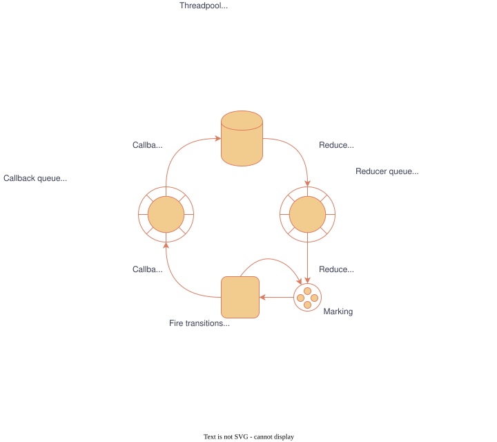

- Generated by
 1.17.0
1.17.0
|
Symmetri
|
Symmetri can be build as stand-alone CMake-project:
It can also be build as part of a colcon-workspace:
Symmetri has a set of tests. There are three build configurations:
Each sanitizer can be enabled by setting either the 'ASAN_BUILD'- or 'TSAN_BUILD'-flag to true. They can not both be true at the same time.
The sanitizers generally increase compiltation time quite significantly, hence they are off by default. In the CI-pipeline however they are turned on for testing.
Symmetri was built with the the idea to serve as an abstraction at the behavioral level. Petri nets encode execution protocols that are built from smaller building blocks. The smaller building blocks could be Petri nets or some other piece of executable (fireable) code, shaped in the form of callbacks. In theory the smallest transitions could be simple functions such as "pop data from queue" or something of similar complexity. In practice we envision more elaborated transitions such as take photo for example. The main motivators for this self-imposed distinction is twofold.
Firstly, there is a performance penalty on wrapping everything in transition-blocks. The penalty is partly that the execution of the transition-bound callback is dispatched to a threadpool (adding latency), also in order for a transition to be fired, it needs to be checked to see if it is fireable. Checking whether a transition is enabled is not expensive, but it can easily overshadow the payload if that is very small (e.g. a small function).
The second reason for placing the transition at the behavorial level is to mitigate the scalability issues that are inherent to Petri nets. Petri nets offer many formal analysis techniques. but Petri nets with infinite loops, or simply a lot of places and tokens have a huge if not infinitely large reachability graph. This renders the formal analysis unfeasible. By keeping the Petri nets small and bounded it stays feasible to give some insight on their workings.
WIP
WIP
WIP
